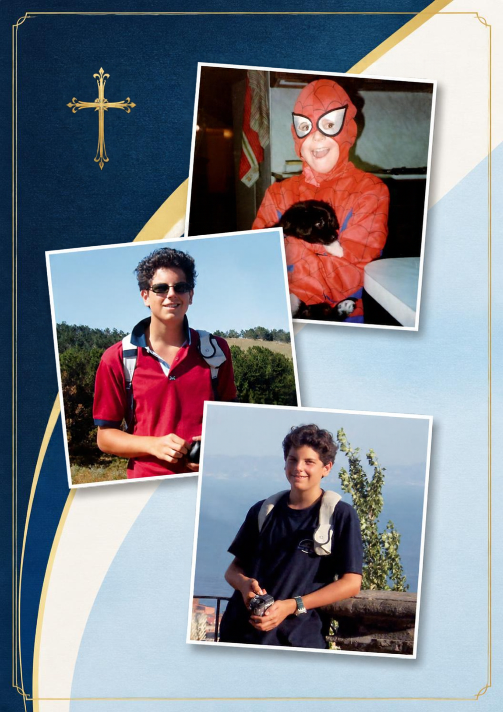

Uma estrada
para o Céu.
Adoração e Santa Missa com a relíquia de primeiro grau de São Carlo Acutis, na Unicamp.
QUINTA-FEIRA UNICAMP | ☀️ EXPOSIÇÃO DA RELÍQUIA APÓS A MISSA

"A Eucaristia é a minha estrada para o Céu."
SÃO CARLO ACUTISPermaneça o tempo que puder.
Este é um espaço de encontro pessoal. Chegue, silencie o coração e permaneça em oração pelo tempo que puder.
Presença
Jesus, eu creio que estás aqui. Acolhe tudo aquilo que hoje trago em meu coração.
Entrega
Coloco diante de Ti meus estudos, minhas escolhas, meus medos e as pessoas que amo.
Intercessão
São Carlo Acutis, ajuda-nos a encontrar na Eucaristia a força para viver a santidade.
São Carlo Acutis
Nascido em Londres em 1991 e criado em Milão, Carlo Acutis desde cedo demonstrou uma inclinação extraordinária para as coisas de Deus. Chamava a Eucaristia de "minha autoestrada para o Céu" e comungava diariamente a partir dos 7 anos de idade.
Vida de Oração e Devoção
Além da Santa Missa diária, Carlo reservava momentos diários para a Adoração ao Santíssimo Sacramento antes ou depois da celebração. Ele rezava o Santo Terço todos os dias e mantinha uma profunda devoção a São Francisco de Assis.
Caridade Silenciosa e Tecnologia
Pioneiro da evangelização digital, ele usou sua paixão pela programação para catalogar os milagres eucarísticos do mundo todo. Fora do computador, vivia uma caridade concreta: ajudava colegas que sofriam bullying, levava sacos de dormir e refeições para os moradores de rua em Milão com seu próprio dinheiro de mesada.
Ao ser diagnosticado com uma leucemia fulminante aos 15 anos, offered todos os seus sofrimentos ao Senhor pelo Papa e pela Igreja Católica. Faleceu em 2006 e foi canonizado, tornando-o o primeiro santo da era digital.